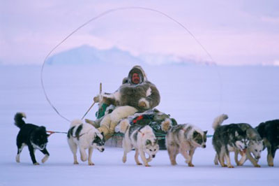
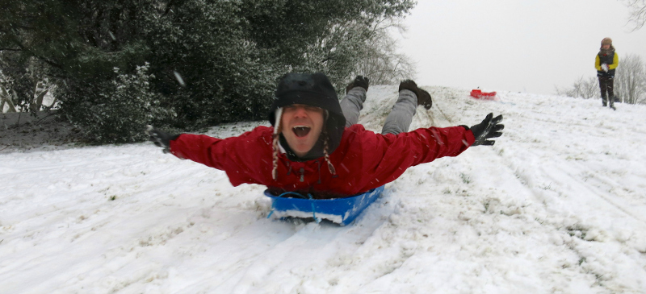
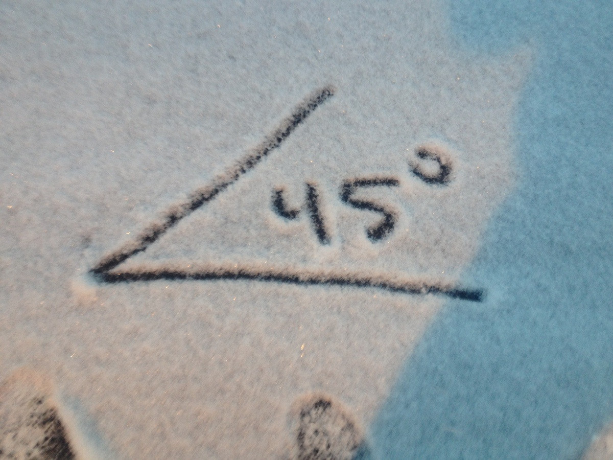
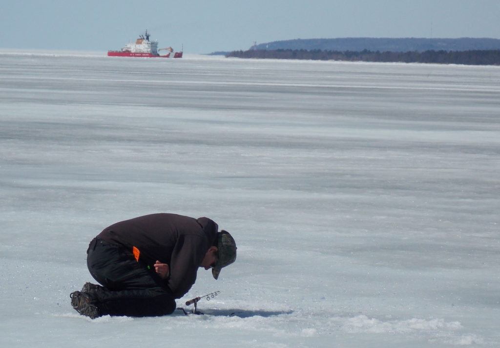

Dorothy Codes a Book About Snow Days
5 Frosty Haikus
Thursday, February 08, 2018 11:58 AM
From: Fracareta, Dylan
To:Chun, Susan
Cc:Melcher, Gabriel; Lin, Dorothy; Iverson, Joe
- - - - - - - - - - - - - - - - - - - - - - - - - - - - - -
For tomorrow Dorothy is going to research thoroughly and putting together a presentation of the bindery site I sent you last week for next weeks HTMAB. She’s psyched and I’m excited to see what possible application it could have, for Internet and beyond.
...
Alternatively, and if you prefer:
- Dorothy will be: Mushing
- Gabe will be: Cross-country sledding
- Dylan will be: Making Snow Angles
- Joe will be: Ice Fishing
- Bridget will be: Tubing

Dorothy will be: Mushing
Mushing with huskies
Is not nearly as dope as
This book of haikus

Gabe will be: Cross-country sledding
Gabriel flies by
From his sled he gives a shout
With gusto, "chingon!"

Dylan will be: Making Snow Angles
Promised snow angels
Typographical error
Again, measuring

Joe will be: Ice Fishing
I respect the vibe
Of a man who sits on ice
Instead of his couch
Bridget will be: Tubing
Fast and furious
Bridget tubes not for the gold
Only for glory
What did you do on your snow day?
This book was made with bindery.js.
Thank you for reading
This book I made in lieu of
Learning how to code